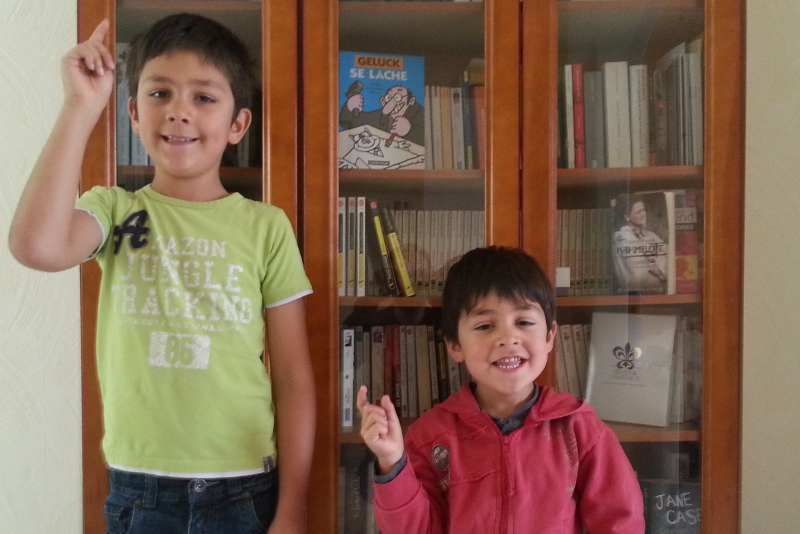

Spock, le testing nouvelle génération
Breizhcamp
Cédric Champeau, SpringSource
14 Juin 2013
Qui suis-je ?
Passé : contributeur Groovy
Bugfixes
Modules: @Bytecode AST xform, GFreeMarker
Core: compilation customizers, @xInterrupt, ...
Utilisation de Groovy comme DSL pour le TALN
Aujourd'hui: Core Groovy committer
Compilation configuration
Static type checking
Static compilation
Bugfixing...
Social
Twitter:
@CedricChampeau
Google+:
http://gplus.to/cchampeau
Blog:
http://jroller.com/melix
Spock
Framework de test pour Java
Basé sur des spécifications
BDD
Syntaxe élégante
Proche cucumber (Ruby)
Mais plus élégant que cucumber-jvm !
Basé sur Groovy
https://code.google.com/p/spock/
http://docs.spockframework.org/en/latest/
Questions

←
→
/
Go to slide:
#